00The map
The product line is "AI finds the pattern. A playbook runs it forever." It makes four promises:
- P1 Investigate a record and return a verdict where every finding cites the tool call it came from.
- P2 Propose containment actions that a human approves, gated by risk tier.
- P3 Reach on-prem targets through the analyst's chosen connector config.
- P4 Bottle an investigation, or a request, into a FortiSOAR playbook that runs without the AI.
Four pieces deliver it. The widget is the window; the connector is the engine; fsr_playbooks is the brain's rulebook; the harness is how we build and ship all of it.
flowchart LR A[Analyst] --> W["Chat widget
fortiaiAgenticAssistant"] L[SOC lead] --> M["Monitor widget
socAssistantMonitor"] W -- "chat_turn / chat_poll / chat_resume" --> C["Connector
connector-fsr-soc-assistant"] M -- "list_usage, list_pending, policy ops" --> C C -- "imports, runs in process" --> F["fsr_playbooks
agent loop, tools, compiler, verifier, guards"] F -- "LLM provider" --> P[(Anthropic / OpenAI / FortiAI proxy)] F -- "reads catalog" --> DB[(Reference DB
connectors, ops, modules)] C -- "REST /api/3" --> S[(FortiSOAR records,
playbooks, connectors)] C --> Q[(SQLite session store)]
Who decides what
This is the one idea to hold onto. The model proposes. Deterministic code checks. A human commits.
The model
- Reads the request
- Picks tools, connectors, operations
- Drafts YAML or edit operations
- Reacts to fix lists
- Writes the prose and the verdict
The code
- Which tools exist this turn
- Whether each call is allowed
- Whether a playbook compiles and verifies
- Which exact bytes can be offered
- Whether a save would lose data
- Risk tier of every action
The analyst
- Clicks Apply or Save on a playbook
- Confirms each tier 3 or 4 action
- Answers choice and manual-input cards
- Reviewers own the autonomy policy
Where each piece lives
| Piece | Repo | Version today | Ships as |
|---|---|---|---|
| Chat widget | fsr_all_widgets/widgets-src/fortiaiAgenticAssistant (own git repo) | 1.2.74 | widget tgz |
| Monitor widget | fsr_all_widgets/widgets-src/socAssistantMonitor (own git repo) | 1.0.18 | widget tgz |
| Connector | ~/PycharmProjects/ConnectorsV2/conn_main | 0.5.180 | connector tgz |
| fsr_playbooks | ~/PycharmProjects/fsr-playbook-framework | 0.7.3 | PyPI wheel, pinned in the connector's requirements.txt |
| Widget harness + build tooling | fsr_all_widgets root (Makefile, scripts/, fortisoar-widget-harness/) | n/a | not shipped |
| Roadmap and board | ~/PycharmProjects/soc-assistant-tracker/ROADMAP.md | n/a | private |
Live versions come from make doctor, not from this page.
01One turn, end to end
Every interaction is a "turn". The widget never waits on a long HTTP request. It starts the turn detached and then polls for progress, because FortiSOAR's uWSGI workers kill requests after a few minutes and a playbook build can take longer.
sequenceDiagram
participant A as Analyst
participant W as Widget
participant C as Connector
participant L as Agent loop (fsr_playbooks)
participant M as LLM
A->>W: message or quick action
W->>C: chat_turn {messages[], intent, entity, detached:true}
C-->>W: {accepted}
C->>C: resolve intent, persona, model, plan, system prompt, tools
C->>L: run_agent_turn(provider, system, messages, tools)
loop up to 40 rounds
L->>M: prompt + advertised tools
M-->>L: text and tool calls
L->>L: gates: advertised? args valid? plan allows? tier?
L-->>C: events become frames in turn_progress
end
loop every 700 ms
W->>C: chat_poll(session, cursor)
C-->>W: new frames
end
C-->>W: stream_end (full transcript, committed once)
- Widget sends the whole conversation.
_runTurnNowsendschat_turnwith every prior message (old tool results capped at 2048 chars), the page facts, the record or open playbook asentity, anddetached:true. The connector builds model context frommessages[]only. It never reads its own store back as context. view.controller.js:3947 - Connector prepares the turn. It works out the intent (an explicit intent wins, otherwise page facts decide), loads the persona from the Key Store, lets the persona choose a model, warms the connector catalog if cold, and reserves a turn number atomically. ops_chat.py:252-401
- Connector plans the turn.
plan_turnbuilds a TurnPlan from structural state: is a playbook open, is there a trace, which page. The plan sets the prompt layers and the refusal rules for this turn. turn_plan.py:438, ops_turn_state.py:459 - The agent loop runs. One shared
run_loopserves every LLM provider. Each round, the model returns text and tool calls. Each call passes the gates before it runs, and calls in a round run in parallel up to the first that needs approval. agent_loop.py:325, 801-842 - Frames stream back. Every event is written as a frame to the
turn_progresstable. The widget pollschat_pollevery 700 ms and renders a live preview. A heartbeat thread marks the turn alive; a turn silent for 420 s is failed rather than left hanging. - The turn ends in a card. A triage ends in a verdict card and maybe an action card. A build ends in a playbook offer or an enhancement offer. If the model verified a playbook but forgot to deliver it, the loop delivers the offer itself. If the turn still ends without one, the connector salvages an offer from the last YAML block or the last verified draft. agent_loop.py:688-716, ops_offers.py:96-245
- The analyst answers the card. Buttons send
chat_resume. The connector routes on the stored card (never on what the browser claims) and runs the decision once. ops_resume.py:50
Frame types and resume calls
Frames: text, tool_use, tool_result, usage, activity, approval_request, error, the card events (action, choice, capability_gap, manual_input, playbook_offer, enhancement_offer, verdict, info, ioc, status), turn_start and stream_end. Wire contract version 2.8.0; the widget banners a major mismatch.
Resume calls: approval (carries approval_id), choice (choice_id, value), action card (card_id, args, grant, config), offer (offer_id, title, edits, workflow_iri, apply_to), and manual input (respond_manual_input, which resumes a paused FortiSOAR playbook run).
History: the last 4 turns replay as real tool_use/tool_result pairs. Collapsing history into text like "[called x(...)]" taught the model to type tool calls as text in 3 of 4 runs, so it was replaced.
02The playbook builder
verified_id, and only those exact bytes can reach an offer card. The save happens in the connector, only when the analyst clicks Apply, after diffing against the live playbook, refusing any unacknowledged loss and taking a snapshot. The model supplies intent and drafting. The library supplies correctness and safety.
The build loop
- Read what is open. In the designer, the widget calls
decompile_playbookat mount and sends the playbook as YAML with every turn. The next turn always edits the current draft. - Discover. The model calls
find(one entry point for connectors, operations, examples, recipes, fields, Jinja) andget_op_schemafor parameters and the known output shape. Answers come from the reference catalog, which is warmed from the box, so it only sees connectors that exist. - Draft. For a new playbook, the model writes YAML. For an open playbook, it sends
edit_playbookoperations: add, update, rename or remove a step; set or remove a route; add or remove a parameter. The tool applies them to the open playbook, so any step the model did not name is carried over untouched. - Verify.
verify_playbook(new) or the verify built intoedit_playbook(edits) returnsready_to_pushplus a structured list of required fixes. - Fix and retry. The model reads the fix list and tries again. Repeating an identical failed call is refused, and a stall detector ends a turn that keeps failing.
- Offer.
emit_card(enhancement_offer, {verified_id})for an edit, oremit_card(playbook_offer)for a new playbook, which re-verifies the exact bytes it carries. - Apply. The analyst clicks Apply. The connector compiles the card's stored YAML, checks it against the live playbook with the prewrite guard, snapshots, and saves or stages it into the open canvas as unsaved changes.
How it decides
Intent comes from state, not wording
The TurnPlan reads structure: has_open_playbook, has_trace and page. A playbook is open, so this is an edit turn; creating a second playbook is refused and the model is pointed at edit_playbook. Nothing is open, so edit tools are refused. The house rule, written in docs/GUARDS.md, is "never decide by parsing wording". turn_plan.py:107, 311-345
Prompt layers
- The intent prompt for build or triage (
fsr_playbooks/agent/system_prompt_build.md). - A context block of page facts plus a disposition paragraph.
- A constraints block: round budget, approval tiers, "never dead-end the analyst".
- The persona or grounding layer, then the invariant house rules, then a note on which log sources are available.
Which tools it sees
The framework registers 77 tools for its MCP server. The agent sees about 26 per turn: 16 framework tools plus the connector's record and triage tools. The list is kept nearly constant so the prompt cache stays warm, then trimmed per turn of anything the plan would refuse (advertised_for_turn). Older docs call this "slicing by intent". The real focusing now comes from the plan's prompt and its dispatch refusals.
On a build turn the record and triage tools (run_op, get_record, record search, SIEM and EDR lookups) are withheld. Everything else the plan might refuse stays listed, so the model learns about a refusal (an offer while a playbook is open, an edit with nothing open) only by calling the tool, which costs a round. The list also changes when a draft becomes the open playbook or a turn is read-only, and that change re-bills the cached prompt prefix at those boundaries. ops_tools.py:96-167, tools.py:1697-1729
The conversation's own draft counts as open
After a build turn offers or saves a playbook, the connector grounds later build turns in the same chat on that draft, so "now also add X" edits it with edit_playbook instead of re-typing it (re-typed refinements once dropped an alert link). The side effect: asking for an unrelated second playbook in the same chat starts as an edit of the first, and a new-playbook offer is refused until the model raises the "modify or create new" choice. A playbook open in the designer always wins over the draft. ops_tools.py:534-577
When it asks instead of acting
Removing steps an analyst did not name brings up a playbook_scope choice card: modify this playbook, or create a new one. Missing inputs become choice or manual-input cards. The constraints block forbids ending on a dead end.
When it stops
| Limit | Value | Where |
|---|---|---|
| Rounds per turn | 40 (MAX_TOOL_TURNS) | _loop_helpers.py:353 |
| Self-repair rounds for a failing YAML fence | 2 | _loop_helpers.py |
| Parallel tools per round | 8 | _loop_helpers.py |
| Soft budget warning | at 3 rounds left | turn_plan.py:58 |
| Rounds on a resume (after a card answer) | 8 | ops_resume.py:1874-1887 |
| Stall detector | ProgressMeter ends the turn after 3 repeat-only rounds or 6 all-error rounds | _loop_helpers.py:2570 |
| Budget exhausted | forced wrap-up or a budget card | agent_loop.py:897-920 |
Measured: what build turns actually do
From 1,871 build turns in a local connector store. This is eval and simulator traffic on several open-weight models, not live analysts, so treat it as the behaviour of the loop, not of real users.
| Measure | Value | What it means |
|---|---|---|
| Model rounds per turn | median 6, mean 8.0, p90 16; new builds 9.1, edits 6.6, explain 2 to 3 | Most of a build is discovery before the first draft |
find + get_step_type | 41% of all tool calls | get_step_type runs in 68% of turns, often 4 or more times; 87 calls guessed a step type that does not exist ("send_email", "schedule", "ForEach") |
| Good build ending | verify_playbook then an offer card | Good and failed turns share the same discovery prefix; they differ only at the close |
| Builds that end with no output | 9% end in prose, 5% on a non-offer card | No Apply or Save button for the analyst |
| Turns with a guard-refused card | 10% | Top codes: unconfigured connector in the offer, offer not afforded on this turn, offer not verified |
| Forced stops | 7% | Delivery, budget, verdict or stall guards ended the turn |
| Top verify fixes | missing_field_on_step_output (305 calls), connector_config_missing (243) | A read of an output field the operation does not produce; a connector that is not configured on the box |
| Offer delivery | generic emit_card about 15x the retired dedicated offer tools | The merged card tool is what models actually use |
| Tools that misfire on build turns | record search 70% error, why_did_playbook_fail 100% (no runs yet) | Offered or reached on turns where they cannot help |
The simulator's "does it run" grade sets the real bar: 28 of 30 canvases met the stated requirements, but only 21 actually ran. The failures were invented record fields, reads past the connector envelope, and parameters read off the record.
Designer Apply, in sequence
sequenceDiagram
participant A as Analyst
participant W as Widget
participant C as Connector
participant D as Designer canvas
W->>C: decompile_playbook at mount
C-->>W: YAML (sent with every turn)
A->>W: "only block when malicious"
W->>C: chat_turn {intent: build, entity.playbook_yaml}
C-->>W: enhancement_offer {verified_id, diff}
A->>W: Apply
W->>W: refuse if analyst has own unsaved edits
W->>C: chat_resume {accept, workflow_iri, apply_to: canvas}
C->>C: compile stored YAML, prewrite guard, snapshot
C-->>W: info_card playbook_staged
W->>D: load as unsaved edits (undo works)
A->>D: Save (the real write)
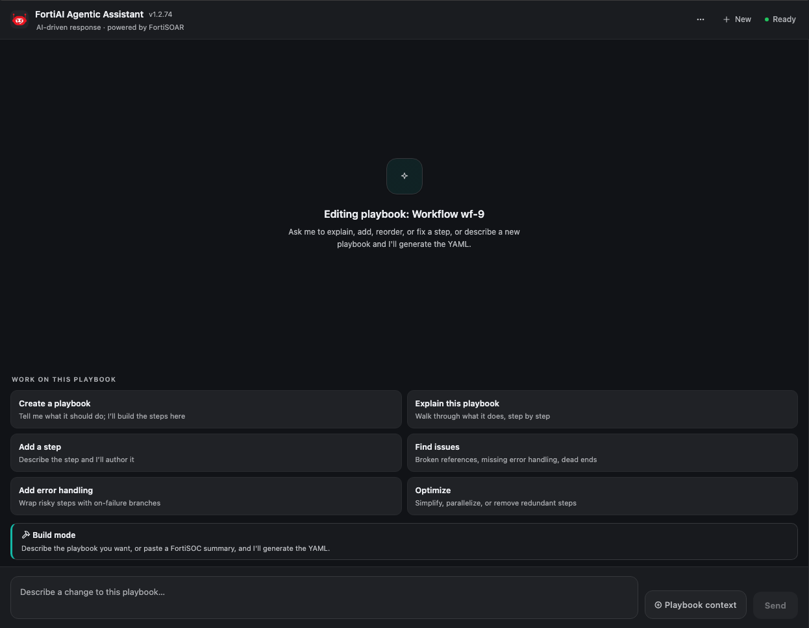
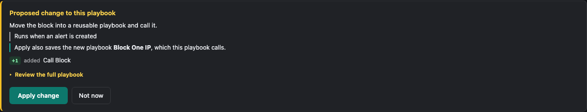
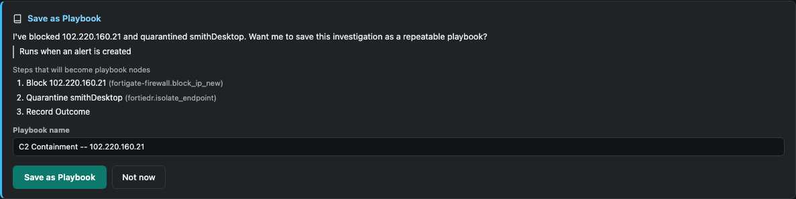
Applying into the canvas as unsaved edits exists because an earlier version saved behind the open canvas. The change stayed invisible until reload, and the analyst's next Save overwrote it.
Model choice
One LLMProvider protocol with four providers: anthropic, openai, lmstudio and fortiai-proxy. All share the same loop; capabilities a provider lacks are emulated by the host. The model catalog marks claude-sonnet-5 and gpt-5.4-mini as tested defaults, several Claude models as supported, and haiku-4-5, gpt-4.1-mini and o4-mini as discouraged after measured gate failures. model_catalog.py:62-140
03What controls it
Every control below is code, not a prompt instruction. The prompt explains the rules so the model wastes fewer rounds; the code enforces them whether or not the model listened.
| Control | What it prevents | Where |
|---|---|---|
| Not-advertised, repeat-failure and duplicate-offer checks | Calling tools outside this turn's list, retry loops, two offer cards | agent_loop.py:391-446 |
| Argument gate | Malformed calls. Runs before authorization, so a bad call never raises an approval card | tools.py:1802, llm/arg_gate.py |
| Turn-plan gate | Running ops or action cards on a build turn; editing with nothing open; a second playbook while one is open. If state cannot be worked out, open-playbook actions are refused (state_unresolved) | turn_plan.py:187-346 |
| Read-only turns | "Explain" and "find issues" chips writing anything | tools.py:1700 |
verify_playbook | Unverified drafts: elision markers, compile errors, type errors on every path, unknown connectors or ops, missing params, unreachable steps (blocking), plus offline-walk and effect warnings | tools_verify.py:616-930 |
verify_enhancement | Dropped or silently renamed steps. The baseline is FortiSOAR's copy of the playbook, not one the model typed | tools_enhancement.py:524-708 |
verified_id binding | Offering bytes that never passed verify. The offer tool accepts an id, not YAML | _verified_yaml.py, tools_emit.py:1183-1282 |
| Create-offer re-verify | Re-typed YAML, offers with no action step, connectors not configured on the box | tools_emit.py:1085-1150 |
| Fence neutralising | A failing YAML block in chat being saved anyway | agent_loop.py:627-643 |
Prewrite guard (would_drop_fields) | Silent loss of steps, routes, fields or parameters at save. Fails closed if the live copy cannot be read | compiler/prewrite.py:475 |
Derived acknowledged_drops | The model widening what may be deleted. Acks come from the verify verdict and are stored on the card, never taken from the browser | tools_enhancement.py:950, ops_resume.py:732 |
| Snapshot before save | Irreversible edits (a Versions snapshot named ai-pre-edit) | ops_playbooks_persist.py:1079 |
Approval tiers + authorize() | Unapproved side effects. Tier 3 and up suspends for a card | llm/authorization.py:216-240 |
_approved rejection + HMAC sessions | The model, or a tampered request, approving its own action | tools.py:1671, approvals.py:181 |
| Caller identity + reviewer roles | A forged actor deciding a card; double clicks running a write twice (decided-once table) | ops_approvals.py:95-204 |
| Analyst Apply | Any playbook write without a human click | ops_resume.py:88-104 |
| Connector offer salvage | A build turn ending with no offer card. Synthesises one from the last YAML block or last verified draft, only if it verifies. Does not check read-only turns | ops_offers.py:96-245, ops_chat.py:793 |
Counted end to end there are about 35 checkpoints a build call or turn can pass through: about 14 at dispatch, about 12 round-level guards after the model stops calling tools, 4 in the connector after the loop returns, and the save-path checks. Each nudge that continues a turn costs a model round. The framework's docs/ARCHITECTURE_AGENT_LOOP.md lists them in order.
Approval tiers
| Tier | Meaning | Examples | Default |
|---|---|---|---|
| 0 | Local compute, card emission | validate_yaml, emit_card | runs |
| 1 | Reads FortiSOAR | find, verify_playbook, why_did_playbook_fail | runs |
| 2 | Reads an external system | a safe run_op query | runs |
| 3 | Changes FortiSOAR data | push_playbook, run_playbook, management ops | approval card |
| 4 | Third-party side effect | block IP, isolate host, any op tagged unsafe or named with a destructive verb | approval card |
authorize() decides in this order: already approved, then below the floor (tier 3, or tier 1 when FSR_AUTO_APPROVE_READONLY=0), then a matching once/always grant, then an eval policy, otherwise a card. Playbook Apply is not part of this ladder. It is the analyst's own click on an offer card.
- With
reviewer_rolesempty (the default), anyone who can call the op can approve. - Claude Code talking to the raw fsr_playbooks MCP server gets all 77 tools with no tier gate.
run_opis protected only byconfirm=True, which the caller sets. - The connector's prewrite guard fails open if an old framework lacks it.
04fsr_playbooks, the library
Most of the system's power is here. The library is a compiler from YAML to FortiSOAR playbook JSON, a reference store describing what exists on a box, and the tools the agent uses. The connector imports it and runs it in process. You can also use it without the agent: the fsrpb CLI, an MCP server for Claude Code, and pyfsr's playbook extra.
The compile pipeline
A compile is a fixed sequence of stages. Each stage adds diagnostics to a shared list; a blocking error stops the emit, warnings do not. The order matters: resolve has to run before anything can be type-checked against the catalog, and the graph checks run last because they need the whole resolved playbook.
flowchart LR Y["friendly
YAML"] --> P[parse] --> L["raw
lint"] --> RL["reference
lint"] --> R["resolve vs
reference DB"] --> A["typed arg
validate"] --> C["corpus
validate"] --> O["connector
output refs"] --> G["graph / Jinja /
cycle validate"] --> E["emit
FSR JSON"] E -. decompile .-> Y
| Stage | What it does | What it catches | Where |
|---|---|---|---|
| Parse | Reads the YAML into the internal step model (the IR) | Malformed YAML, a step missing a type or name | compiler/pipeline.py |
| Raw lint | Foot-gun rules on the raw text and IR, before any catalog lookup | The YAML "Norway problem" (no→false), illegal step-name characters, a mock step with no mock_result; each rule carries its own blocking-or-warning policy | compiler/linter.py |
| Reference lint | The light, existence-only subset of the typed walk, wired into every compile as warnings | A connector, operation or module that is not in the catalog, surfaced early and cheaply without the heavy verify path | compiler/reference_lint.py |
| Resolve | Binds every connector, operation, module and picklist to the real thing in the reference DB | Unknown connector or op, a picklist value that does not exist on this box | compiler/resolver/ |
| Typed arg validate | Checks each step's parameters against the canonical handler's real signature | A required parameter missing, an unknown parameter (unless the handler takes **kwargs); framework-injected params are excluded | compiler/arg_validator.py |
| Corpus validate | Checks the draft against patterns learned from a corpus of real playbooks | Shapes that compile but that no working playbook has ever used | compiler/corpus_validator.py |
| Connector output refs | Rewrites and checks references to a connector step's output | Reads of an output field the operation does not produce | compiler/connector_output_refs.py |
| Graph / Jinja / cycle validate | Whole-playbook invariants once everything is resolved | Not exactly one Start, a path that never reaches End, a decision branch whose condition is not a boolean, a cycle, a reserved variable key, a bad Jinja block | compiler/validator.py |
| Emit | Produces the FortiSOAR WorkflowCollection JSON | (only runs when there are no blocking errors) | compiler/emitter.py |
A final teaching pass (enrich_diagnostics) rewrites raw diagnostics into messages the model can act on, and a self-check (E10) catches the case where the installed wheel is older than the reference DB it is reading. The decompiler runs the pipeline in reverse, turning a live playbook back into the friendly YAML so an open playbook can be edited and diffed. compiler/pipeline.py:114, decompiler.py:194
The YAML step types
Triggers (start, start_on_create, start_on_update, start_on_delete, api_endpoint); logic (set_variable, decision); connector; records (find_record, create_record, update_record, delete_record); human and timing (manual_input, delay, approval, create_task); and others (code_snippet, send_email, workflow_reference, end, ...). Any step can carry when, retry, for_each, ignore_errors and similar modifiers.
Verification beyond compile
Compile proves the playbook is well-formed and every reference exists. Verification goes further and asks whether the data actually flows: does every value a step reads actually get produced upstream, and does every write trace back to something the playbook computed. These checks are the forcing function before a draft can be offered to the analyst.
- Typed walker: walks the playbook as a DAG, synthesizing the output shape of every step (
vars.steps.<step>), accumulating it per branch, and checking every downstreamvars.steps.X.yread against the shape that actually exists at that point. Offline and pure: no box, no HTTP, no DB. compiler/typed_walker.py - Offline walk (
walk_paths): renders the playbook's Jinja locally down the default path and once per decision branch and manual-input option, and reports reads that come out empty. Branches are pinned, so it proves each path is wired, not that a branch fires at runtime. compiler/render_paths.py - Effect inventory: lifts every record write and connector action into an inventory and records which upstream steps feed each written value. It flags a verdict or write built only from literals after the playbook computed something real, and a containment playbook with no effect step at all. It proves linkage, not runtime truth;
make eval-effectreads the real value back on a box. compiler/effect_inventory.py - Grounded output shapes: output shapes measured from real runs, so reads like
data.attributes.last_analysis_statsare checked against what VirusTotal actually returns, not a guess. compiler/grounded_shapes.py
Two tools package this for the agent, and one guard stands at the save:
| Gate | When | What it runs | Where |
|---|---|---|---|
verify_playbook | Before offering a new playbook | A four-stage fan-out: compile, the typed DAG walk, a per-step schema check, and a live safe-op probe. Returns ready_to_push and the structured fix list. Check groups can be toggled | mcp_server/tools_verify.py |
verify_enhancement | Before offering an edit to an open playbook | Everything verify_playbook does, plus a structural diff against the before-YAML to catch a dropped or silently renamed step or a stripped annotation. The baseline is FortiSOAR's copy, not one the model typed | mcp_server/tools_enhancement.py |
Prewrite guard (would_drop_fields) | At save, in the connector | A semantic diff of the pending save against the live playbook. Fails closed and names every dropped step, route, field or parameter; a deliberate delete must be acknowledged. Additions and in-place changes are never refused | compiler/prewrite.py |
The reference DB
Path resolution: $FSRPB_DB, then the full dev cache data/fsr_reference.db (about 92 MB), then the slim packaged copy inside the wheel (2.7 MB).
| Table | Full dev DB | Slim packaged DB |
|---|---|---|
| connectors | 738 | 12 |
| operations | 7,241 | 244 |
| modules | 78 | 39 |
| picklists | 948 | 205 (values only) |
| recipes | 8 | 122 |
| op_safety | 0 | 0 |
On a box, warmup fills the catalog from /api/3/connectors/, so the agent sees that box's actual connectors, and derives op_safety from each op's category. A _catalog_meta stamp records which box and when, so a stale or cross-box catalog is detected.
Tool catalog (what the agent uses)
| Tool | Tier | Does | Impact and guard |
|---|---|---|---|
find | 1 | One lookup for connectors, ops, examples, recipes, fields, Jinja, playbooks | Empty on a cold catalog; returns a re-warm hint. API and example lookups need the optional vendor catalog, which boxes do not have; they return catalog_unavailable with a hint |
get_op_schema, get_step_type, picklist | 0 | Parameters, output shape, step schema, picklist values and IRIs | Picklist IRIs are null until warmup. Exact output paths exist only for operations with a recorded run; others get the generic envelope rule |
list_configured_connectors | 1 | Which connectors are configured and healthy | Read only |
validate_yaml | 0 | Compiler dry run with structured errors | Read only |
analyze_playbook | 0 | Simulated run with render analysis; live ops off by default | Replaced dry_run_playbook, retired because it ran real side effects |
verify_playbook | 1 | The gate before offering a new playbook | Checks are only as good as the warmed catalog. Its live probe is on by default: it runs the playbook's safe read-only operations on the box to ground output shapes |
edit_playbook | 1 | Applies edit operations in memory, then verifies, returns verified_id | Writes nothing to the box |
verify_enhancement | 1 | Diffs an edited playbook against the open one | Mostly superseded by edit_playbook |
build_playbook_from_trace | 0 | Turns the ops a triage actually ran into a playbook, wiring inputs by value matching (P4) | No YAML from the model on this path |
emit_card | 0 | Delivers every card type | Offers need verified bytes |
run_op | 2 to 4 | Runs a connector operation | Tier per call from category, op_safety, destructive verbs |
run_playbook | 3 | Triggers a live run | Tier 2 only for persona allow-listed playbooks |
why_did_playbook_fail | 1 | Finds the last failed run, decompiles it, renders every Jinja block against that run's variables | Read only. Useless on a new build, which has no runs |
| Native MCP tools | 1 or 3 | FortiSOAR 8.0 /mcp/* tools materialized as agent tools | Only with a connector allow-list; each server declared read-only or mutating |
Retired tool names still dispatch to their replacements (RETIRED_TO_UNION), so old persona allow-lists keep working. The tool merges ("B3a") cut 41 advertised tools, about 40k characters of schema, to one per capability, and dropped turn tokens about 15%.
Releases and pinning
- The version comes from the git tag.
make release VERSION=requires main, a clean tree and a version above PyPI's, waits for CI, tags, and publishes. - The connector pins
fsr-playbooks==Xinrequirements.txt, and that is the only place. At import it asserts the running framework matches the pin. - The connector's dev venv uses an editable clone, so it tests whatever branch is checked out. The pre-push CI-mirror hook builds a clean venv from the pin, and that is the real gate.
- Framework changes reach a box only through a release plus a pin bump, or through
ship-dev, which leaves the box reporting the wheel version while running other code.
05The connector
connector-fsr-soc-assistant is a normal FortiSOAR connector with 47 operations. Each op runs synchronously inside FortiSOAR's integration workers and wraps the async framework in asyncio.run(). Lifecycle hooks (start, add config, update config, activate) start a background catalog warmup.
Operations by purpose
| Group | Ops |
|---|---|
| Chat transport | chat_turn, chat_poll, chat_resume, chat_history, list_sessions, rate_session, respond_manual_input, resolve_persona |
| Tools and MCP | list_agent_tools, call_mcp_tool, list_mcp_tools, list_mcp_servers, probe_native_mcp, get_session_trace |
| Playbooks | compile_yaml, validate_yaml, resolve_yaml, push_playbook, update_playbook (Apply), decompile_playbook, dry_run_playbook, render_jinja |
| Autonomy and schedules | auto_triage, set_auto_triage, resolve_escalation, undo_action, get/set_autonomy_policy, list_shadow_decisions, scheduled task CRUD and run-now, notify_finding |
| Monitor and cost | list_usage, get_usage_summary, get_audit_trail, list_pending, list_active_sessions |
| Config and health | health_check (includes a build_id), list_models, warmup, query_store, echo_param_types |
Configuration
- LLM:
llm_provideris anthropic, openai or fortiai-proxy, and each reveals its own key, model and URL fields.persona_modelslets a persona pick its own model.simulation_modeserves live tools from simulated data. - MCP:
mcp_access(all or selected servers),mcp_tier(read-only or mutating),mcp_auth, and a JSONmcp_allowlistescape hatch. - Approval:
reviewer_roles. Empty means the reviewer gate is off. There is no approval-tier field; the floor is the environment variableFSR_AUTO_APPROVE_READONLY.
State: one SQLite file per host
~/.connector_fsr_soc_assistant.db, one connection per op, 15 s busy timeout, BEGIN IMMEDIATE writes. Main table groups:
- Chat and streaming:
chat_turns,chat_messages,turn_progress(the poll feed),turn_runs(owner and heartbeat),session_transcript. - Approvals:
suspended_sessions(pickled, 600 s TTL),session_cards,session_card_decisions(decided once),session_card_executions(the source for undo). - Resume re-binding:
session_intent,session_playbook,session_read_only,session_playbook_scopeand similar. A resume often lands on a cold worker with no context, so everything the turn knew is stored and re-bound. - Monitor:
agent_usage,agent_tool_calls,chat_sessions,scheduled_tasks.
Two approve routes
An approval_id pops a framework gate that suspended mid-tool and continues the loop. A card_id approve on an action card runs run_op deterministically, before the model is involved. Both record the execution, which undo depends on. The deterministic route exists because an approved isolate was once only narrated and never ran.
Autonomy
The policy lives in the Key Store record fsr_autonomy_policy, cached 15 s so the kill switch acts within seconds. Every card gets a "shadow" decision: what the policy would have done. Enforcement needs enabled and mode: enforce, and happens only in unattended auto_triage. In an analyst's chat, cards always wait for a click. Editing the policy requires reviewer_roles.
Undo
undo_action takes the reverse op from the policy or a built-in pair (FortiGate block and unblock), uses the args that actually ran, restores record fields from their prior values, and claims each undo once.
06The widgets
A FortiSOAR widget is an AngularJS 1.x controller plus an HTML template, mounted into a slot on a FortiSOAR page. info.json drives its name, version, pages and compatibility. The controller name embeds the version (fortiaiAgenticAssistant1274DevCtrl is 1.2.74), which is why versions are only bumped by the CLI.
Chat widget: fortiaiAgenticAssistant
- Where it appears: a drawer on alerts, cases, war rooms, list and detail pages, and the playbook designer.
- Files that matter:
view.controller.js(about 5,950 lines),view.html(with CSS),fsrPbAgent.service.js(all connector I/O and the one source of the connector's name),fsrPbRender.ts(pure render pipeline, compiled to.jswith a parity test),contract.d.ts(wire types), and a mock connector with fixtures. - Talking to the connector:
executeConnectorActionwith the starred default config, resolved at run time. A stale resolution busts the cache and retries once. - State in the browser: one thread per record in
localStorage. Everything else is on the server and replayed bychat_historyon reload.
Cards and what their buttons do
| Card | Buttons | Server side |
|---|---|---|
| Verdict | evidence chips, suggested next step | None. A chip scrolls to the tool call it cites; a chip with no matching call shows as missing. A suggested step pre-fills the composer |
| Action | Confirm and Execute, Cancel, always allow, Runs on | Runs the op once; a second click gets "already decided" with who decided |
| Approval request | Approve, Reject, Approve and always allow | Pops the HMAC-bound suspended session. The widget grades the real result: executed, failed, denied, expired |
| Playbook offer | Save as Playbook, Not now | Builds from the trace or the verified YAML, compiles, pushes |
| Enhancement offer | Apply, Decline | Prewrite guard, snapshot, then save or stage into the open canvas |
| Choice | chips, free text, Continue | Continues the conversation |
| Manual input | the playbook's own buttons | Resumes the paused playbook run; refuses answers after the deadline |
What the cards look like
Captured at drawer width (the widget opens as a half-width drawer) from the hermetic mock scenarios, so the data is sample data.
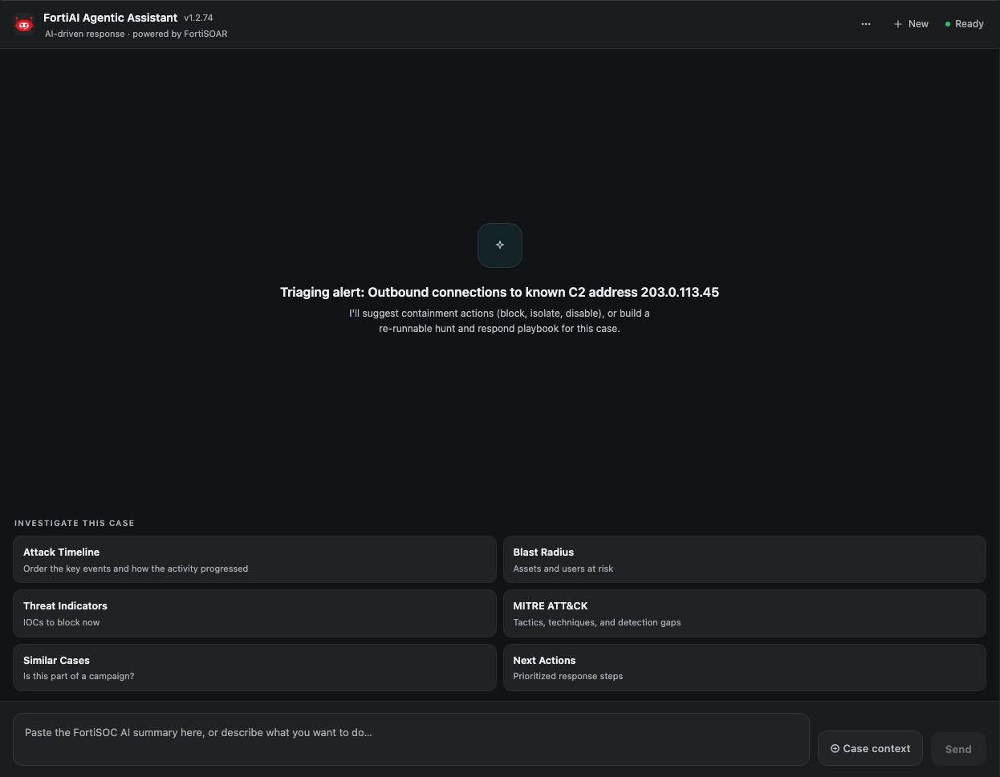
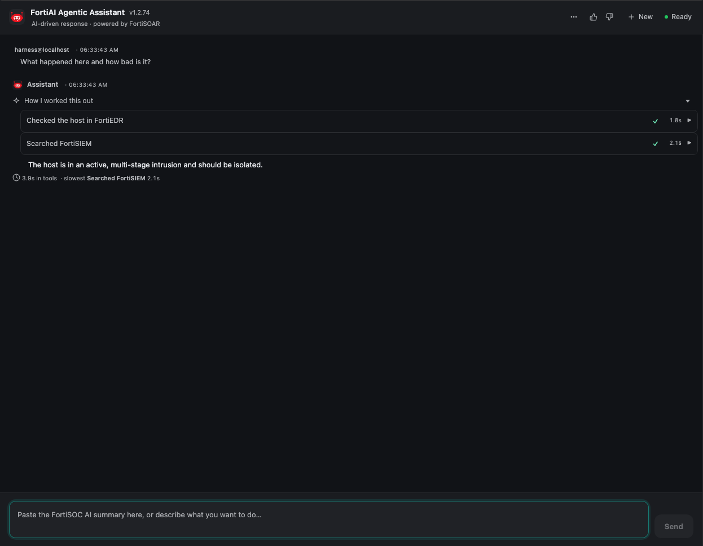
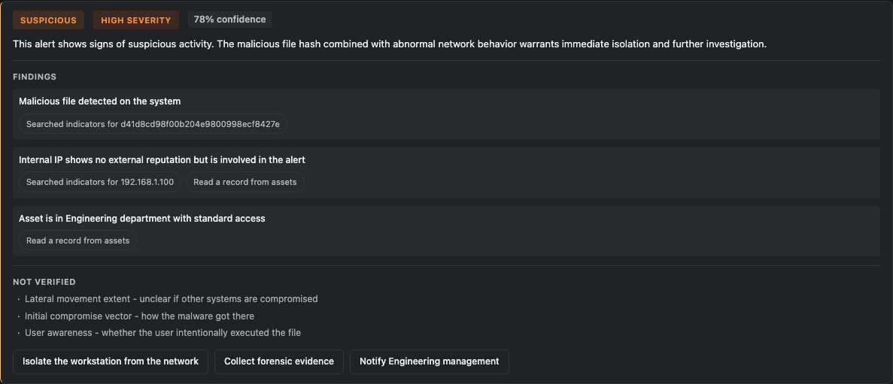
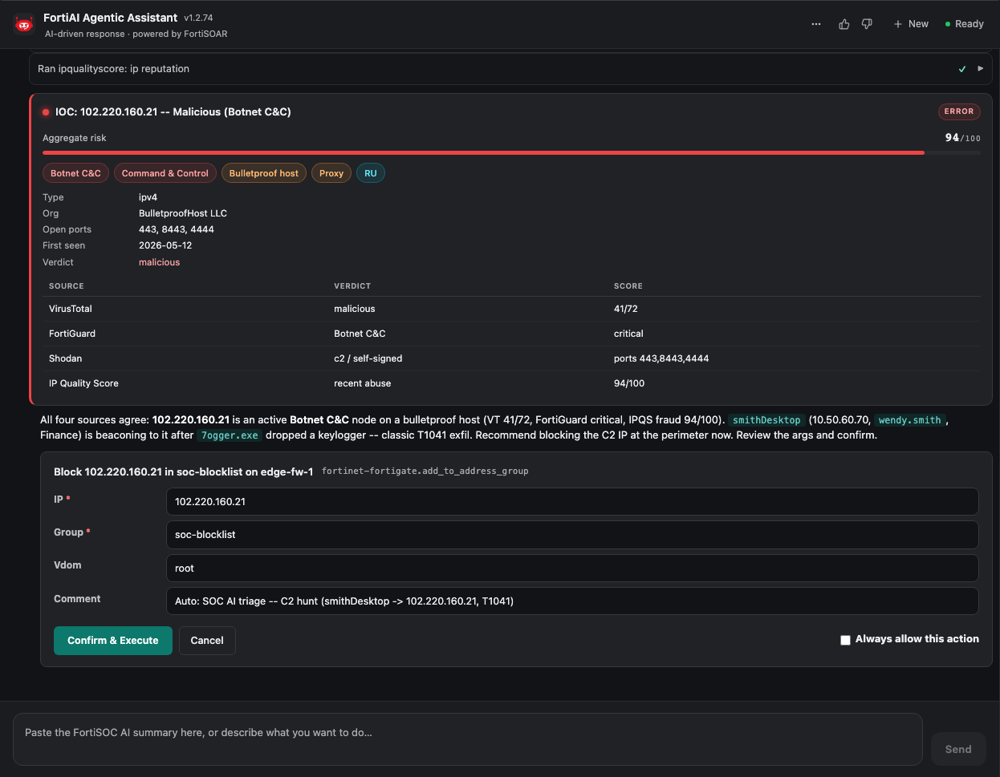
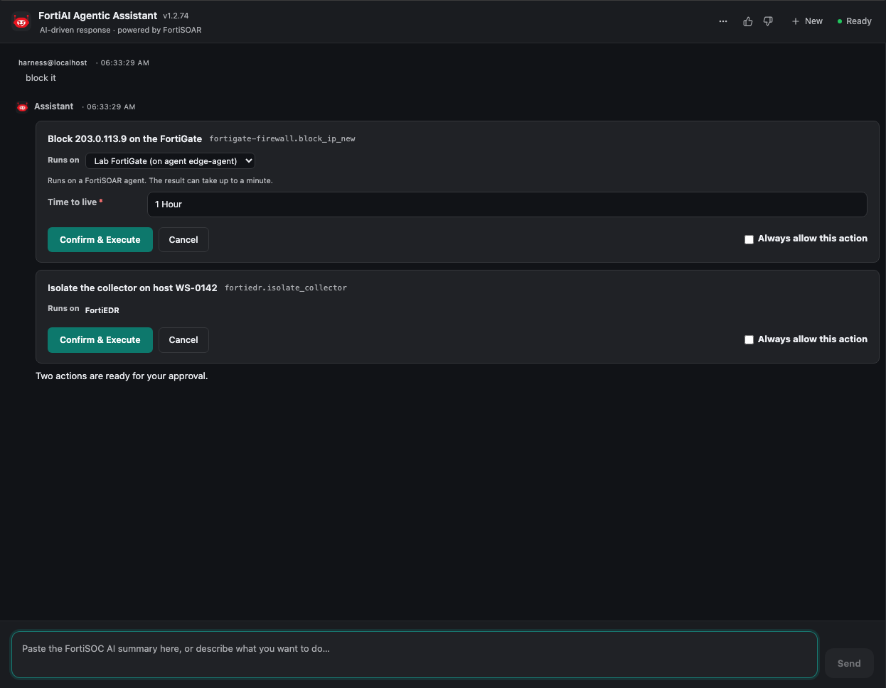
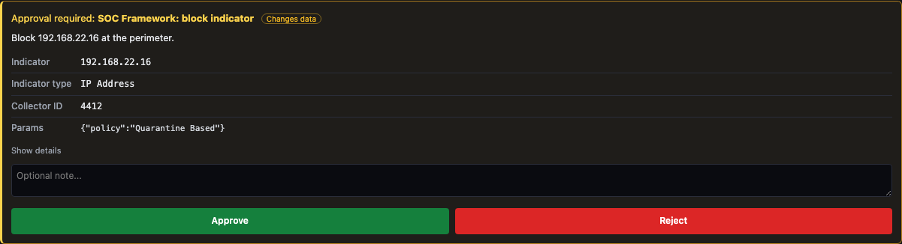
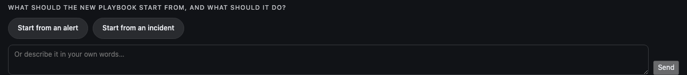
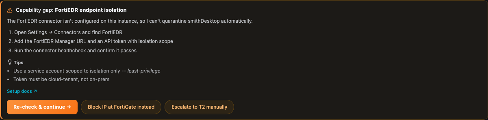
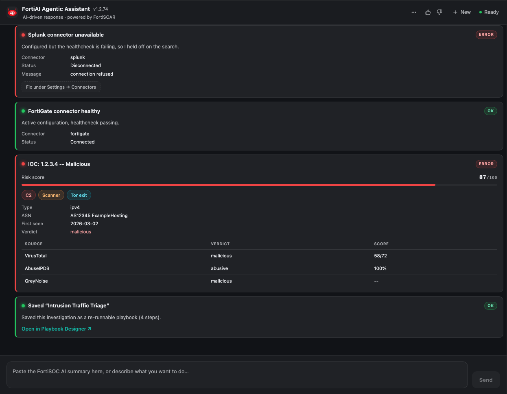
Rules the widget enforces
- Analyst-facing text never shows tool names, ids, enum values or JSON paths, and has no emoji or em dashes. Tool rows read as actions. The model ignored these prompt rules live, so the renderer enforces what it can.
- Only a verified offer card loads YAML into the playbook. YAML the model types into prose is held back. A read-only question once returned a whole playbook, and scraping that block made it the open playbook.
- Apply is refused when the analyst has unsaved edits of their own.
- Guards and approvals live in the connector and framework, so a modified widget cannot bypass them.
Monitor widget: socAssistantMonitor
A dashboard for SOC leads with tabs for Overview, Sessions, Pending, Users, Scheduled, Audit Trail and Autonomy. It reads only from the connector's store (usage, pending approvals and escalations, audit trail, sessions, scheduled tasks, shadow decisions) and can approve from the queue, resolve escalations, undo actions and edit the autonomy policy. "Open in chat" hands a session to the chat widget through a one-shot localStorage key. The tabs are shown in the next chapter.
07Autonomy and oversight
Autonomy is how the assistant moves from "proposes, a human clicks" toward "acts on its own" without anyone losing control. It works in three stages, and every stage is visible in the Monitor.
How a record is handled without an analyst
flowchart TD R[New alert created] --> T["On-create playbook
installed by set_auto_triage"] T --> A["auto_triage
one unattended agent turn"] A --> V[Verdict + proposed action card] V --> P{"Autonomy policy
matching rule?"} P -- no rule --> Q[Card waits in Pending] P -- rule --> S{Policy mode} S -- shadow --> SD["Record shadow decision:
would run it / would ask"] --> Q S -- "enforce + enabled" --> E{"All rule conditions met?
verdict, confidence, target, limits"} E -- no --> Q E -- yes --> X["Execute as system:autonomy
then read the result back"] X --> L[Audit trail + undo available] Q --> H[Reviewer approves or rejects in chat or Monitor] H --> L
- Shadow mode is the default. Every card gets a shadow decision: what the policy would have done. Nothing runs without a human.
- Enforce needs the policy
enabledandmode: enforce. It applies only to unattendedauto_triage. In an analyst's chat, cards always wait for a click. - Earning it: the Monitor states that a rule can be enforced only after two weeks with no "would run it, rejected". In those cases the policy would have acted and a human disagreed.
- Kill switch: the policy is a Key Store record cached for 15 seconds, so turning it off takes effect within seconds.
- Who can change it: saving a policy requires a configured
reviewer_roleslist. The JSON is validated by the framework's policy parser, and an invalid policy is refused with nothing changed.
The life of an action card
stateDiagram-v2 [*] --> Proposed: agent emits card (tier 3 or 4) Proposed --> Claimed: Approve (initiator or reviewer) Proposed --> Rejected: Reject Proposed --> Retired: decided in another tab or the Monitor Claimed --> Executed: op ran, result read back Claimed --> Failed: op error (claim released, retry possible) Executed --> Undone: undo_action with the args that actually ran Rejected --> [*] Executed --> [*] Undone --> [*]
Each decision is claimed once in the connector's store, so a double click or a second tab cannot run a write twice. The execution record stores the arguments that actually ran, which is what undo reverses.
The Monitor, tab by tab
The Monitor is a full-width dashboard widget. Mock data from its hermetic e2e fixtures.
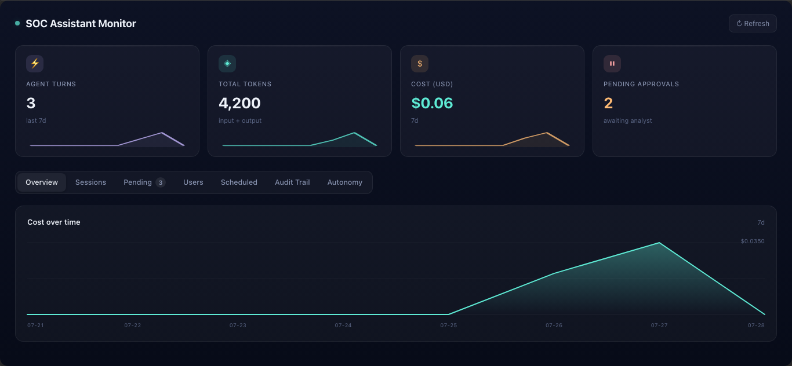
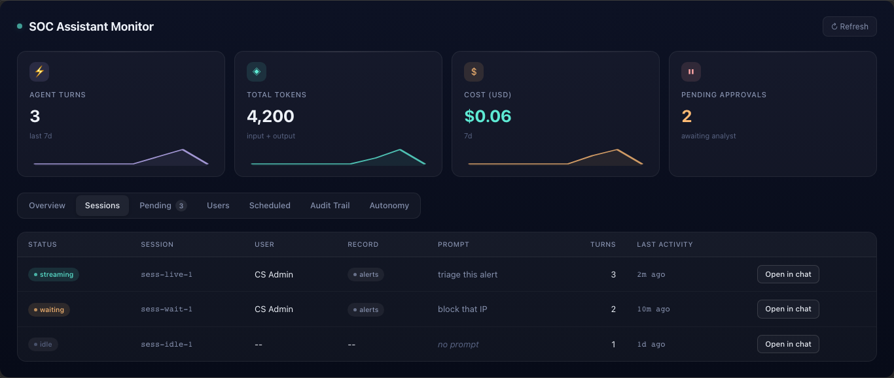
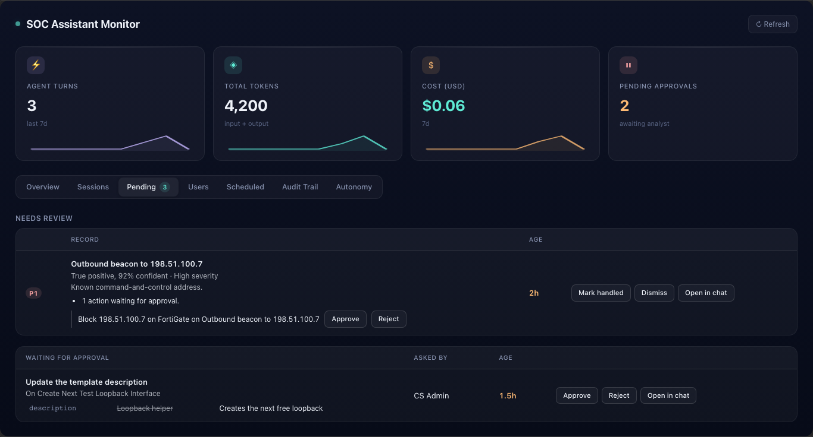
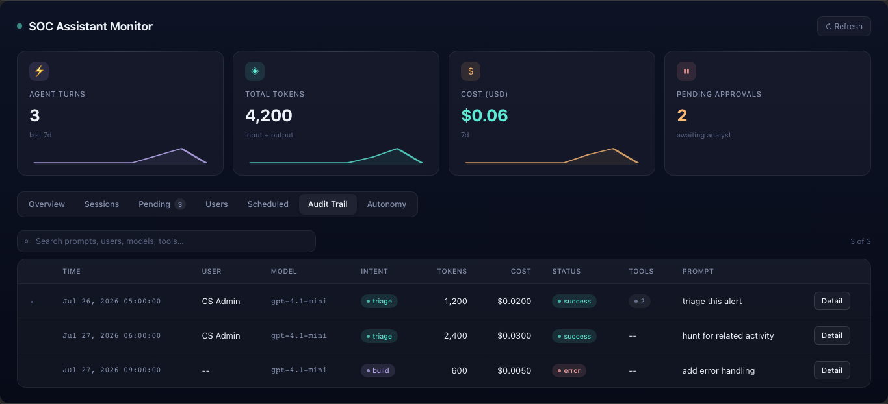
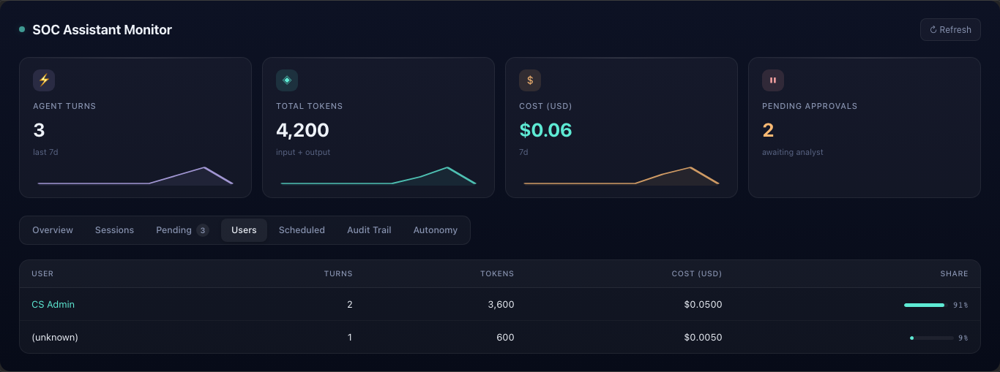
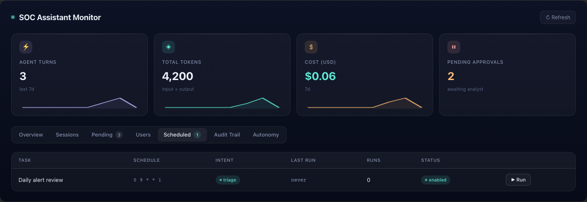
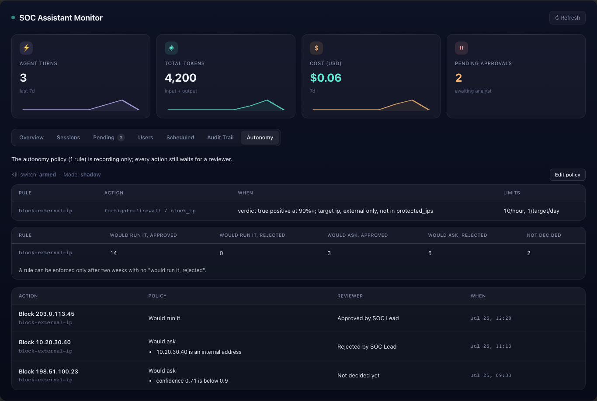
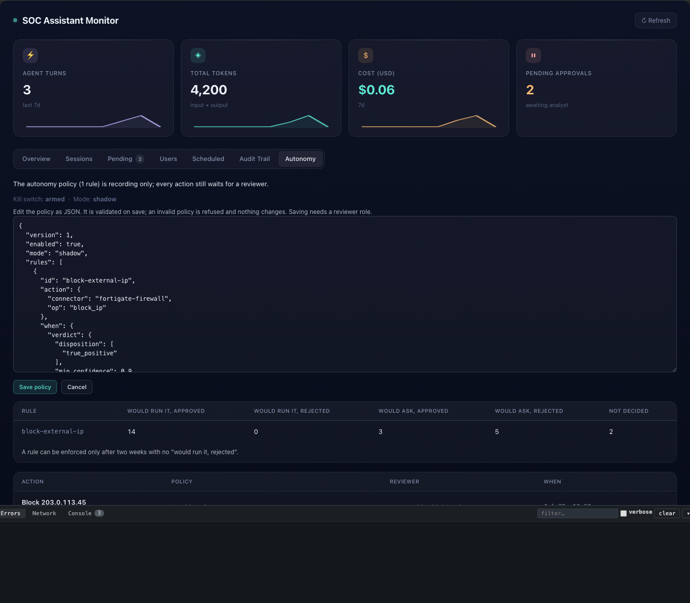
08Harness and deploy
The root repo fsr_all_widgets is the dev kit: the Makefile, scripts/, the knowledge base, the template, and the harness. Each widget under widgets-src/ is its own git repo. Commit inside the widget's repo, not the root.
What the harness adds
- Dev server on :14400 that renders widgets inside the real FortiSOAR app shell and proxies
/api/*to a lab box. - Lint at mount. A widget that fails lint does not boot.
- Hermetic mock e2e. Any request the mocks do not serve returns
599 HERMETIC-MISSand fails the run, so a box outage can no longer turn the mock tier red. - Per-run ports claimed with a lock, so parallel runs stop killing each other.
turn-hermetic: the real widget against the real connector code in a local sidecar, with a fake LLM.
Make targets by risk
| Target | Does | Touches |
|---|---|---|
make setup, make assets | Install, clone widgets, fetch the app shell | local |
make dev / make stop | Interactive harness | local |
make test-unit WIDGET= | Tier 1: jest controller logic | local |
make test-e2e-spec WIDGET=|SPEC= | Tier 2: hermetic Playwright | local |
make widget-inspect ARGS= | DOM facts for a mounted widget | local |
make doctor [LOCAL=1] | Read-only health of repos, pins, box versions, dev-patch marker, box LLM | box read |
make loop | Tier 3: local tests, free LLM smoke, copy working trees to the box, 35 s live smoke | box |
make widget-push WIDGET= SHIP_ENV=.env.<box> | Lint, unit, deploy one widget (1-2 min) | box |
make push ENV= SSH_HOST= [DRY_RUN=1] | Connector, framework and every changed widget, idempotent | box |
make ship-verify WIDGET= | Tier 4 release gate: lints, unit, e2e, introspect, deploy (bumps), live sweep | release |
make release WIDGET= | Bump, commit, push to develop, GitHub release | public |
make release-ship [FW=next] (connector repo) | Framework PyPI release, wait for PyPI, pin bump, connector ship | release |
Release targets are run by you, never by an agent. Agents commit on branches and stop.
Connector ship mechanics
make ship: test gate, bump, build, check the box can resolve the pin, install, verify workers, force a warmup.make dev-push: rsyncs working trees and waits for every worker to report the newbuild_id. FortiSOAR registers ops at install, so a new op or config field needs a bumped install;dev_push.shdetects this and escalates.make ship-dev ACTION=statusmust saycleanbefore you trust a version number.release-shipdoes not clear the dev-patch marker;ACTION=restoredoes.- Remotes:
origin(GitLab) is authoritative and runs CI;fndnis fetch-only. History was scrubbed of lab details.
How do I...
| Task | Command |
|---|---|
| Check whether the box and env can be trusted | make doctor |
| Drive a widget by hand | make dev, open localhost:14400 |
| Unit test one widget | make test-unit WIDGET=<name> |
| Mock e2e for one widget | make test-e2e-spec WIDGET=<name> |
| Scaffold a widget | make new-widget NAME=<camelCase> TITLE="..." |
| Deploy one widget to a lab box | make widget-push WIDGET=<name> SHIP_ENV=.env.<box> |
| Deploy everything that changed | make push ENV=.env.<box> SSH_HOST=<alias> DRY_RUN=1, then without DRY_RUN |
| Daily agent iteration | make loop |
| Test a widget from a worktree | Put it at <scratch>/x/widgets-src/<name> and pass WIDGETS_SRC=<scratch>/x/widgets-src |
| Check render size and boot regressions | make introspect-gate GATE_WIDGET=<name> |
09Testing and evals
The ladder runs cheapest first. "Frank" is the free internal LLM gateway, limited to 3 concurrent turns. Paid LLM batch runs are not used; quality is measured on Frank.
| Target | Proves | Cost |
|---|---|---|
make test (connector) | The whole shuffled suite; the ship and CI gate | free |
make tool-sweep | Contract invariants over every tool, about 2 s | free |
make mutants | Reverts each recorded fix and expects its test to fail | free |
make regrade DUMP= | Re-grades stored transcripts with no model | free |
make t1-scenarios, conv-suite | Single-turn invariants, multi-turn continuity and resume | Frank |
make known-answer | Triage verdicts against recorded worlds | Frank |
make analyst-sim | An LLM plays the analyst through a whole build: vague asks, choices, Apply, refinements. Each failure is attributed to tool, framework, connector, widget, environment or model | Frank |
make session-health | Classifies failing tool calls in real sessions and whether the model recovered | free |
make eval-effect | Pushes a fixture playbook, runs it, reads back that the computed value landed | box, no LLM |
make live MODE=... | The installed connector on a box; integration is the post-ship gate | box |
make test-live-sweep | Widget rows on a live box. A SWEEP-ENV-SKIP means not verified | box |
689056d, local) with a test that fails without the fix. This class of bug is why the simulator exists: the unit tests were green.
Rules for tests
- Red-check every fix. Remove the fix in a scratch worktree, watch the test fail, restore. Tests written by the same model as the fix share its blind spots; one feature shipped 13 green tests and failed its first live save.
- A skip is not a pass. A release gate once skipped its live sweep after a rename and still printed "live-verified".
- Verify the write, not the card. A card that looks right proves nothing; read the result back from the box.
- Re-grade, never re-drive. Grade stored transcripts offline instead of paying for new turns.
10Why it is this way
Most rules in this system were written after something broke. This is the decision log.
| Rule | What happened |
|---|---|
| The LLM writes YAML, never FSR JSON | FSR JSON is verbose, full of UUIDs and IRIs, and has nothing to check it against. A DSL plus a compiler gives deterministic, catalog-checked, diffable output, the same for every surface |
| Edits are operations, not re-typed documents | An agent re-typed a verified playbook to deliver an edit, dropped two links, and the saved playbook ran only its first step |
verified_id: offers carry an id, not YAML | The model re-typed a verified playbook three times, and the widget saved the last version, which no gate had seen |
| Prewrite guard on every save | Data loss shipped twice: for_each blocks and playbook parameters vanished on save |
| Decide on structure, never wording | A phrase-list guard was added and removed the same day; regex intent is brittle and fails silently. GUARDS.md lists the remaining guards with fire counts |
| Library-first validation | A parallel validator would have been "a fifth copy of the same SQL". New checks extend the fsr_playbooks validators |
| One right way per tool | Overlapping tools confused the model and cost about 40k characters of schema per turn |
| Detached turns plus heartbeat | uWSGI killed long builds mid-request; turns hung on dead workers |
| Deterministic action-card execution | An approved isolate was narrated as done and never ran |
| Reviewer gate and decided-once | The widget's actor field could be forged; a double click ran a write twice |
| Resume re-binds stored session state | Resumes land on cold workers with no context, which turned off read-only mode and grounding |
| Config-scoped MCP; declared mutating tools | A worker leaked another config's MCP servers, and block_indicator ran at tier 1 because its server was marked read-only |
| Apply stages into the canvas | A save behind the open designer stayed invisible and was overwritten by the analyst's next Save |
| Connector name has one source in the widget | After a rename, a hardcoded old name kept talking to a frozen install and silently missed every later fix |
| Hermetic mock e2e | The mock tier fell through to a real proxy, so a box outage turned it red; 17 "pre-existing" failures turned out to be 3 real bugs |
| Never hand-start servers | A stale harness held the port; the new one died silently and pushes went to the wrong box |
Explicit SHIP_ENV and SSH_HOST | Deploys used whichever box was last in .env; a mismatched pair overwrote another session's push |
| No en or em dashes; latin-1 | The connector is decoded as latin-1 on the box; a dash in a playbook name arrived as a control byte |
| Ordered release-ship | Connectors shipped before PyPI served the pinned framework, or pinned a version missing a symbol |
| Agents never release or push | An agent ran a release, a ship and pushes on three repos based on an earlier "you can release" |
| Free Frank gateway as the LLM test tier | With a fake provider, "two models agree" meant no model ran |
11Demo questions, with answers
What stops the AI from deleting steps from my playbook?
Four layers. Edits are operations that name only what changes, so other steps are carried over untouched. Verify treats a dropped step as an error unless the analyst named that step and asked for a deletion. At save, the prewrite guard diffs against the live playbook and refuses any loss not acknowledged by the verify verdict, and the AI cannot add acknowledgements. A Versions snapshot is taken before every save.
How do you know the playbook it built works?
Before it is offered, it compiles against this box's real connector catalog, passes a typed check of every variable read on every path, passes per-step schema checks, and is walked offline down every branch to find empty reads. Safe read-only operations can be called live to confirm output shapes. Static checks cannot prove what happens at runtime, so the effect read-back eval runs a playbook on a box and checks the written value.
What if the model invents a connector or operation?
Compile fails with unknown_connector or unknown_operation and a near-match suggestion. A playbook offer is refused if it uses a connector not configured on the box. An approval card is never raised for an operation that does not exist.
Why not let the LLM write FortiSOAR JSON directly?
It is verbose, full of UUIDs and internal IRIs, and there is nothing to check it against. The YAML format is compact, the compiler resolves it against the real catalog, errors come back as structured fix lists the model can act on, and the decompiler turns any live playbook back into YAML for editing.
Can the AI approve its own action?
No. Tiers are assigned by code. An approval flag in a model's tool call is rejected. Suspended sessions are HMAC-signed so a resume cannot be forged, and with reviewer roles configured, only the session's initiator or a reviewer can decide, once.
Is it prompt-steered or code-steered?
Mostly code. The prompt explains the rules so the model spends fewer rounds. Tool availability, refusals, verification, tiers and the save guard are enforced in code whether or not the model followed the prompt.
What if it loops forever?
A turn has at most 40 rounds, a budget warning at 3 left, a stall detector that ends repeated or all-failing rounds, and a refusal of any identical call that already failed.
Which model does it use? Can I use our own?
Any of four providers through one interface: Anthropic, OpenAI-compatible endpoints, LM Studio, or the FortiAI proxy. The tested defaults are Claude Sonnet 5 and GPT-5.4 mini. A persona can pick its own model.
What does the analyst still have to do?
Click Apply or Save on any playbook change and confirm every action that changes data or touches a third-party system. Autonomy can take over tier decisions only in unattended auto-triage, only in enforce mode, under a policy that reviewers own and can switch off within seconds.
How does an investigation become a playbook?
At the end of a triage, the offer lists the steps that actually ran. Accepting runs build_playbook_from_trace, which replays those operations and wires their inputs by matching values. The model does not write any YAML on this path.
12Sharp edges and stale docs
Behaviour to know
- The action card shows the connector operation id (for example
fortinet-fortigate.add_to_address_group) as a de-emphasised technical chip beside the human title. That is deliberate and covered by tests. The editable parameter names are now humanised ("Time to live", nottime_to_live), matching the approval card. - The approval reviewer gate is off by default (
reviewer_rolesempty). - The raw fsr_playbooks MCP server has no tier gate. Claude Code connected to it can push playbooks directly.
op_safetyis empty in both local DBs, so offline tiering leans on op category and verbs. A box warmup fills it.verified_idlives in one process, capped at 32. A worker recycle between verify and Apply fails withunknown_verified_id.- Per-worker caches (MCP servers, persona, roles, policy) mean behaviour can depend on which worker answers.
- The connector's SQLite store is per host and reportedly wiped on upgrade.
- Stop in the chat only stops the browser; the server finishes the turn.
- The designer integration reaches into FortiSOAR UI internals, so a FortiSOAR UI change can break Apply. It logs
designer_stage_failed. - After any redeploy, analysts must hard-refresh.
- The connector's offer salvage ignores read-only turns, so an explain turn that prints a changed, verifying YAML block can still get an Apply card. The store shows explain turns that edited or offered (13 of about 200).
- An unrelated second playbook asked for in the same chat is treated as an edit of the first one's draft until the model raises the scope choice.
- The build-only tool list exists twice, in the framework (
intents.py) and the connector (ops_prompts.py), and the two already differ. - Number and password fields on an action card painted white text on a white background under dark themes, so an analyst approved a device id they could not read. Fixed on a widget branch, not yet shipped.
- CI runs Python 3.11; the box runs 3.12.
Deploy traps
ship.shkills anything on :14400, including yourmake dev.ship-verifybumps by default and still defaultsSHIP_ENVto.env.- A red ship-verify does not mean "not shipped": step 5 deploys before step 6 can fail.
make pushdefaults to a hardcoded box and is not committed yet.widget.jsignoresWIDGETS_SRC, so lint, bump and rename from a worktree hit the shared checkout.- A dev-patched box reports the wheel version while running other code.
Docs that are wrong today
widgets.manifestlists an old widget name and missesfortiaiAgenticAssistant, somake setupon a fresh Mac will not reproduce the current set.- The Monitor widget keeps a second hardcoded copy of the connector name, and its
info.jsonclaims it readsllm_activity_logs, which it does not. - Connector
info.jsonstill says "Stub in 0.0.1" forchat_turn;health_checkmentions only Anthropic; the audit log hardcodes provider "anthropic". - The chat widget README pins two different connector versions; both widgets declare compatibility 7.6.5 while the docs say 8.0.
- Framework README says "~16 tools" (that is the agent slice; the server has 77).
ARCHITECTURE_AGENT_LOOP.mddescribed a loop inside each provider, tool slicing by intent, and collapsed history; a rewrite matching the shared loop is on a framework branch, not merged. - Two guard docstrings lag their code:
CreateDeliveryGuardstill describes a pinned model round (the loop now delivers directly), andVerdictDeliveryGuardsays triage-only. - The technical deck's generated pptx is current with its script, but some of its asset screenshots are still from an older widget build.
STATUS.mdhas been idle since August; the tracker'sROADMAP.mdis the live plan.
13Connector creation, today and agentic
Most of the pieces for building connectors already exist on this Mac, spread across eight places with nothing tying them into one flow. There is no OpenAPI-to-connector converter and no agent tool or prompt for connector work.
| Asset | What it gives you | State |
|---|---|---|
Miscellaneous/fortisoar/fsr_connector_toolkit | Linter with stable codes, anti-pattern checks, replay of operations.py against recorded vendor responses with no box, test scaffolding, a corpus of about 32k recorded API calls, a 3,200-line building guide, a read-only MCP server | Working; hardcoded paths |
pyfsr api/connectors.py | Validate source against the importer's real rules, pack, install, configure, health-check, execute, dev-mode file edits | Working, tested |
Miscellaneous/fortisoar/connectors/ | 51 probes of what the 8.0 importer rejects; an overlay pattern for extending vendor connectors | Canonical research |
fortisoar-connector-vscode | New Connector, Add Operation, Run, Check Health, Scaffold Tests, Export | Released v0.0.2 |
| ninjaone, ansible, inoreader connectors | info.json generated from code with a drift check; live matrix that records fixtures; mock vendor server | Per-connector patterns |
fsr-playbook-framework provision_connector.py | Registers a dev connector in the reference DB so the playbook builder can use it | Working |
fndn-fortiapi-specs | Downloads Fortinet OpenAPI specs | Unused downstream |
An agentic flow that mirrors the playbook builder
- Typed spec. A pydantic
ConnectorSpec(operations, params, config fields) limited to what the importer accepts. This plays the role the YAML DSL plays for playbooks. Enhancing an existing connector means reading itsinfo.jsonback into a spec, like the decompiler. - Generate.
info.jsonandoperations.pystubs from the spec, with a shared request helper and a drift check. Inputs can be an OpenAPI spec, corpus endpoints, or an existing connector. verify_connectortool. Spec validation, toolkit lint and anti-patterns, pyfsr importer validation, output schemas against recorded bodies, and a secret scan, returned as structured fix codes the agent can act on, likeverify_playbook.- Offline test. Scaffolded tests plus replay against recorded responses in a sandbox. No key, no box.
- Human approval. The spec diff, code diff, verify report and test results on a card. Write or disrupt operations need approval before any live run.
- Install and prove. Pack, install, configure, health-check, run read-tier operations, record the responses as fixtures, then register it in the reference DB so the playbook builder can use the new connector immediately.
Gaps to close first: one shared typed model for info.json, a Python scaffolder, a single record and replay format, packaging the toolkit, and agent tools for verify, test and install.
14Glossary
| Term | Meaning |
|---|---|
| Turn | One request from the widget, run by the agent loop until it ends in text or a card |
| Detached | The turn runs in a background thread; the widget polls for frames |
| Frame | One event in a turn's progress feed (text, tool call, card...) |
| Intent | Triage or build, decided from page state |
| TurnPlan | Per-turn prompt layers and refusal rules derived from state |
| Persona | A Key Store record that sets a module's prompt, tool allow-list, model and UI wording |
| Skill | A record in assistant_skills that adds house rules to a persona |
| Warmup | Filling the reference catalog from the box's installed connectors |
| Reference DB / catalog | SQLite store of connectors, ops, modules, picklists, examples the compiler resolves against |
| verified_id | A content hash of YAML that passed verify; the only thing an enhancement offer accepts |
| Prewrite guard | The save-time diff that refuses unacknowledged loss (would_drop_fields) |
| Staged Apply | An edit loaded into the open designer as unsaved changes; the analyst's Save writes it |
| Tier | Risk level 0 to 4 assigned by code to every tool call; 3 and up need approval |
| Shadow decision | What the autonomy policy would have done for a card, recorded but not enforced |
| Frank | The free internal LLM gateway used for evals |
| Dev-patched | A box running working-tree code copied over a released wheel |
| Hermetic | A test tier where any unmocked network call fails the run |
Built from seven code-reading passes over the widget, connector and framework repos and their commit history (the latest re-mapped the build loop and its guards), a usage census of 1,871 stored build turns, and project memory. Line numbers drift; treat them as starting points. For live versions run make doctor.